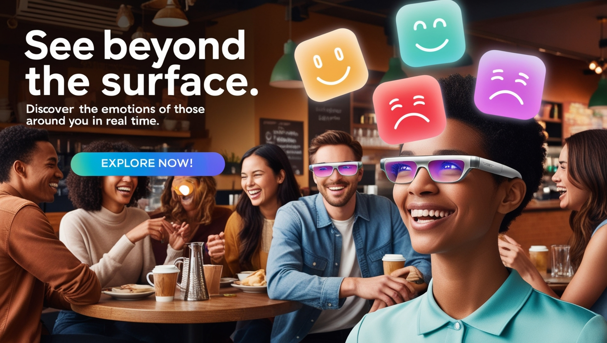

GENE THERAPY RESEARCH
Jay Laurence Garcia
SOSCITECH
Gene therapy and stem cell research can potentially change the medical research landscape by opening up diseases previously thought to be incurable for investigation and interference. Such promise, however, is accompanied by a set of ethical and social considerations that call for further scrutiny. The most vital question pertains to ethical considerations would be the concept of informed consent and should assume foremost importance so patients are knowledgeable of the risks and long-term implications of such experimental treatments.
Informed consent then becomes a matter not of a bit of paper signing but rather a substantially developed conversation between the patient and health care providers. What especially makes the science particularly challenging has to do with complexities of gene editing as well as applications involving stem cell. Patients should receive adequate information not only regarding the potential advantages of these novel therapies but also the dangers. They should be aware that there can be unanticipated long-term effects as well as short-term complications. For instance, gene therapies may induce unwanted changes in the genes; off-target effects that the alterations might unintentionally affect other genes to produce medical problems not intended.
It is much more complex because it adds the ethical question of the genetic enhancements of people into the debate. The concern here is that such technologies could be applied not only to treat genetic diseases but also, as an example of an engineer for a "designer baby," to create a baby that possesses desired qualities. This raised deep questions on the equity level of society : if access to such technologies is going to be limited only to rich folks, it would further polarize existing inequalities as those who could afford enhancements might otherwise appear different from those who could not. This propensity for inequality makes it imperative that a sound regulatory framework be put in place to ensure even access to such innovative treatments.
Advertisement

Perception buds : Connect Beyond Words.
The most significant ethical issue is the absence of known safety and efficacy for gene therapy and for stem cell therapies, especially regarding germline modification. Since any alterations to reproductive cells will be passed on to their offspring, complex consent issues arise. How can patients today provide informed consent for interventions that will affect their descendants? This calls for a redesign of informed consent procedures to address family and other societal issues affected by genetic alterations as well.
Not only is equitable access important but also access to all these therapies. High development costs of gene therapy and stem cell work may limit availability to a very few group of individuals, leading to a situation where these new developments benefit only the few, which can further worsen existing health disparities and calls for more policies addressing broader access and affordability.
Advertisement

MoodLens : See Beyond the Surface.
Religious and cultural sensitivities over genetic modification add to the complexity of ethical discourse concerning these technologies. Some might consider the tampering of human genetics as the desecration of nature's order that provokes human conscience towards moral concerns over scientific interference into human life. These call for more open dialogues in which varied beliefs and values come into consideration while discussing prospects for genetics.
As such, most important at this stage would be the formulation of a framework that ensures gene therapy and stem cell research are presented from an ethical standpoint, taking into account the rights of individual patients but also the ramifications for families and society as a whole. It needs to promote education and communication so that patients are empowered to make informed decisions and feel comfortable discussing their concerns with healthcare professionals.
Thus, ethical implications of gene therapy and stem cell research require more serious consideration as we begin to tread into this new frontiers in medicine. In trying to address some of these important questions on the two revolutionary technologies, appropriate considerations on guidelines of informed consent, equal access, and societal impacts will be relevant. By encouraging transparency and inclusivity, we may push ourselves toward that inclusive future and share the fruits of genetic research in the benefit of all while honouring distinctive ethical visions that shape our understanding of being human.
Nanotechnology’s Great Power:Balancing Innovation for a Responsible Future.
As nanotechnology advances, its capacity to transform various sectors such as medicine, energy and materials science becomes more distinct. Considering the innovative drug delivery systems that precisely target cancer cells; they exemplify the remarkable potential of this field. However, as Uncle Ben articulated in a Spiderman film, "with great power comes great responsibility." The swift advancement...
Respect the Balance: Why Protecting Nature Means Protecting Ourselves
Imagine a world where the rivers are no longer clean, where the forests are silent, and where whole species—animals, plants, insects—are forever exterminated. It sounds like some dystopian novel being brought to life, but this reality is sneaking in upon us all much sooner than we imagined. This destruction is not something that occurs "out there," in far-off rainforests or oceans we never see...
GMOs: Feeding the World or Endangering Our Health?
For a quarter of a century, genetically modified organisms, or GMOs, have been at the center of public debate globally. They represent the promise of a better agriculture and food-delivery future to many while for others this invention is a source of danger to human health. While GMOs improve crop yields and increase resistance to pests and diseases, with a tremendous improvement in nutritional...